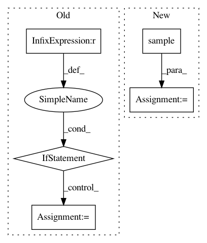

af461df627ef660d1a71b6981dedb4e4b504ba9a,txtgen/modules/connectors/connectors.py,StochasticConnector,_build,#StochasticConnector#Any#,256
Before Change
raise ValueError(
"Gaussian connector requires tuple input tensors.")
if len(inputs) == 2:
input_mu, input_log_var = inputs
output = sampler(input_mu, input_log_var)
elif len(inputs) == 3:
input_mu, input_log_var, context = inputs
sample = sampler(input_mu, input_log_var)
output = tf.concat([sample, context], axis=1)
else:
raise ValueError("Gaussian connector supports either "
"(mu, logvar) or (mu, logvar, context)")
else:
raise ValueError("Unsupported distribution")
self._add_internal_trainable_variables()
After Change
the decoder state.
output = inputs.sample()
try:
nest.assert_same_structure(inputs, self._decoder_state_size)
except (ValueError, TypeError):
In pattern: SUPERPATTERN
Frequency: 3
Non-data size: 5
Instances
Project Name: asyml/texar
Commit Name: af461df627ef660d1a71b6981dedb4e4b504ba9a
Time: 2017-09-25
Author: junxianh2@gmail.com
File Name: txtgen/modules/connectors/connectors.py
Class Name: StochasticConnector
Method Name: _build
Project Name: keras-team/autokeras
Commit Name: 68f81a02c0bef03ba40959580b2415750d2e7f87
Time: 2018-08-06
Author: jhfjhfj1@gmail.com
File Name: autokeras/net_transformer.py
Class Name:
Method Name: to_wider_graph
Project Name: asyml/texar
Commit Name: d6dcffa15112f03d1bb08764740a78728e47e7d7
Time: 2017-12-29
Author: zichaoy@cs.cmu.edu
File Name: texar/models/tsf/ops.py
Class Name:
Method Name: gumbel_softmax